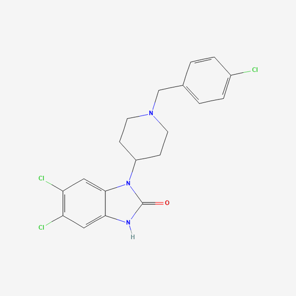

SR 17018
Biased Mu-Opioid Receptor Agonist
Quick Start — Suggested Doses
A rough starting-point reference from r/SR17018 community reports. There is no universal dose — it depends on your weight, metabolism, and which opioid (and how much) you are coming off. Do an allergy test first, then start low and go slow: wait at least 2 hours between doses and titrate up only as needed.
| Coming off (your DOC) | Typical starting dose | SR needed |
|---|---|---|
| Kratom (lower doses) | ~10–20 mg | ~1 g |
| Suboxone / buprenorphinetaper subs as low as you can first | ~25 mg | ~2 g |
| Classic opioids — oxycodone, heroin | 25–50 mg, ~3×/day | ~2 g |
| Fentanyl, heroin, nitazenes ("zenes") | 25–30 mg every 4–6 h | ~2–3 g |
| Methadone (long-acting) | ~25–50 mg, longer taper | ~3 g |
| 7-OH, MGM & kratom extracts | 50–150 mg, ~3×/day | ~3 g |
Amounts are approximate — 3 grams is more than enough even for a heavy habit. Most people settle around 30–50 mg three times a day. There is no reliable morphine-equivalent for SR 17018 — it is 1:1 with morphine in rats only, does not translate to humans, and dosing by comparison to your old opioid is dangerous. See the full Dosing, Community Taper Protocol, and Safety sections below.
Overview
SR 17018 is a synthetic, biased G-protein mu-opioid receptor agonist — it favors G-protein signaling over beta-arrestin-2 recruitment. Developed at Scripps Research as a safer painkiller, it has been adopted by harm reduction communities for a different purpose: coming off opioids and reducing opioid tolerance. It suppresses withdrawal without euphoria and with minimal respiratory depression — but it has never been through a human clinical trial, and much is still unknown. It has been a Schedule I controlled substance in the United States since August 27, 2026.
Use as an Opioid-Cessation Tool
SR 17018's main real-world use, documented on r/SR17018, is discontinuing opioids — or lowering tolerance to them — without acute withdrawal. Members report coming off fentanyl, heroin, nitazenes ("zenes"), methadone, buprenorphine, kratom and 7-OH, ODSMT, and other synthetic opioids. Because it does not precipitate withdrawal, two transition strategies are reported:
- Stop the opioid, start SR 17018 right away
- Reported as safer, faster, and using less SR 17018
- Many wait until withdrawal begins before the first dose
- Keep the opioid at a lowered dose while taking SR 17018
- Possible because SR 17018 doesn't precipitate withdrawal
- May produce fewer withdrawal symptoms overall
Whether to "preload" — start SR 17018 before fully stopping your opioid — is hotly debated; see Preloading below.
Preloading
Preloading means starting SR 17018 — and often easing your opioid (your drug of choice, or DOC) down — for a day or more before you fully stop, rather than quitting cold the same day. Whether it helps is hotly debated and seems to depend on what you're coming off; there's no hard science yet.
- Oxycodone, heroin, buprenorphine / subs
- Guide author and many say it's not needed — a same-day switch usually works
- Some call it pointless, or suspect the relief is just leftover DOC
- Synthetic kratom extracts & other multi-receptor drugs
- Many find it genuinely helpful
- Some say SR "doesn't work" for them without it
When people preload, the usual approach is a short one-day lead-in (some do a few days): take SR 17018 alongside your DOC — often while tapering the DOC down — then stop the DOC and continue SR. A longer-half-life DOC may need a longer lead-in. One epileptic member found preloading prevented the brain-zaps and seizure symptoms an abrupt stop caused.
Bottom line: for traditional opioids and Suboxone you probably don't need to preload; for 7-OH, MGM, and kratom it may be worth a short one. It's anecdotal and individual — listen to your body.
Dosing
There is no universal dose. Reported effective doses range from roughly 25 mg to 150 mg, depending on weight, metabolism, and which opioid (and how much) you're leaving. Recurring principles from r/SR17018:
- Start low, go slow — titrate up only as withdrawal requires.
- Smaller, more frequent doses beat large infrequent ones.
- Don't redose more often than every ~2 hours — onset is slow, so it's easy to overdo.
- Potency is non-linear, with a ceiling around 100 mg per dose.
- Log every dose (time and amount) — that's how you find your dose.
A common starting point: roughly 30–50 mg three times a day for a typical habit (50–150 mg for 7-OH and kratom extracts), for about a week. Around 3 grams total is usually enough; more doesn't lower tolerance any faster. The human morphine-equivalent is unknown (1 mg ≈ 1 mg morphine in rats, but that doesn't translate reliably) — so don't dose by comparison to other opioids.
Community Taper Protocol
After an allergy test, the r/SR17018 master document lays out a three-phase protocol — community guidance, not medical advice:
0 · Allergy test. Take under 5 mg and watch for any reaction — rash or hives, itching, swelling of the face, lips, or tongue, or trouble breathing. If any appear, stop and seek care.
1 · Calibration (~3 days). On the day you stop your opioid, start around 25 mg (20–35 mg), wait at least 2 hours between doses, and titrate up to manageable withdrawal — logging each one.
2 · Maintenance (4–7+ days). The total that controlled your withdrawal over 8 hours becomes a fixed dose taken every 8 hours (some use 6 or 12). This stabilizes you and lowers tolerance; longer-half-life opioids may need a longer maintenance.
3 · Taper (≥3 days, often ~10). Once comfortable, cut about 10% per day; hold if withdrawal turns intolerable. Done when you're comfortable at 0 mg.
SR 17018 builds little tolerance of its own, so its own withdrawal is usually mild or absent — the taper mainly smooths off lingering symptoms (likelier after ~80 mg+ doses or courses over 7–10 days); with none, you can simply stop. Some keep a low twice-daily dose afterward for cravings, and comfort meds (clonidine, propranolol, gabapentin, pregabalin) help. A community Taper Schedule Generator automates the math.
Onset & Duration
SR 17018's half-life is roughly 8–12 hours — how long it stays in the body, not how long you feel it. The felt duration (how long it holds back withdrawal) is about 6–12 hours, usually near 8 — so some drug remains after relief fades. Onset is gradual: relief begins ~30 minutes in, peaks around 2 hours, and holds 5–6 hours. That's why dosing every 8 hours suits most people through maintenance and taper.
Route of Administration
SR 17018 is oral only. It's insoluble in water and propylene glycol (PG), so it can't be snorted, "boofed," or injected — which incidentally limits abuse. It dissolves in DMSO and PEG300, but those solvents carry health risks, so weighing it into capsules is preferred. Rectal use has been tried and reported as ineffective and uncomfortable.
Mechanism
Conventional opioids activate both G-protein and beta-arrestin-2 pathways; the beta-arrestin side drives respiratory depression (the main cause of overdose death), constipation, and rapid tolerance. SR 17018's strong G-protein bias appears to decouple withdrawal relief from those harms, giving a wide dose range before respiratory depression sets in.
It binds the receptor tightly but signals weakly — a biased partial agonist with high binding affinity and low intrinsic efficacy. Tight binding relieves withdrawal no matter how potent your last opioid was; the weak signal is why it gives no euphoria and no reliable pain relief in opioid-tolerant people. It's also noncompetitive: in lab assays it does not displace another opioid from the receptor the way a competitive agonist or antagonist does. That is the reason it does not cause precipitated withdrawal like buprenorphine (Suboxone), and can be taken alongside another opioid while you taper.
Where it actually binds is unsettled. This page used to say SR 17018 binds a separate (allosteric) site. That was one proposed explanation for noncompetitive behaviour, not a measured result, and the direct structural evidence points the other way: a 2022 cryo-EM study resolved SR 17018 sitting in the receptor's main (orthosteric) pocket, the same pocket morphine and fentanyl use (PDB 8EFL). What makes it different is how it sits there: it contacts helix TM3 and makes weak or no contacts with TM6 and TM7, the helices conventional opioids grip. The authors of the noncompetitive study have also floated a “bitopic” possibility — acting at both the main site and a second site — but no allosteric site has ever been imaged. The practical point is unchanged: the noncompetitive behaviour is what has been measured repeatedly, and that behaviour is why precipitated withdrawal isn't expected. The mechanism behind it is still an open question.
Its most striking, least-understood trait is that it appears to reduce tolerance over time — holding off withdrawal while walking tolerance back toward baseline. The mechanism isn't settled: G-protein bias is one proposed but incomplete explanation, since other G-protein-favoring opioids like kratom and 7-OH don't lower tolerance. Later papers lean instead on its unusually low efficacy — the idea being that a very weak opioid signal lets the machinery behind tolerance reset in a way that total abstinence doesn't. Community lore puts the reset at roughly a week on SR 17018 against roughly two weeks of abstinence, which is in the same direction as the mouse data, where SR 17018 reversed morphine tolerance about twice as fast as an inert control. Nobody has measured that in people, and some members argue the effect is just time away from your drug of choice. Both the bias and the low-efficacy accounts remain hypotheses.
Effects
For regular opioid users SR 17018 produces no euphoria or "high" — members describe relief from withdrawal without reward. It's functional, not pleasurable, which is why it doesn't seem to swap one dependence for another. People typically report about an 80% drop in withdrawal symptoms; the main side effect is drowsiness at roughly 50 mg and up.
- Withdrawal suppression
- Tolerance reduction over time
- Reduced opioid cravings
- Mild relaxation / sedation at higher doses
- Euphoria / reward
- Respiratory depression (none reported below ~150 mg)
- Tolerance build-up
- Precipitated withdrawal
Pain relief is inconsistent: many report little or none, some opioid-naive users get mild relief (one likened it to Tylenol), and others say their chronic pain worsened. Don't rely on it as a painkiller.
Safety & Harm Reduction
The biggest risk: lower tolerance means a higher overdose risk. After a course of SR 17018 your opioid tolerance is much lower, so returning to your old dose can be fatal — it has killed at least one person in the community. If you ever use opioids again, treat yourself as opioid-naive and start at a small fraction of your old dose. Keep naloxone (Narcan) on hand.
- Allergy test first, before any real dose.
- Verify your product. Real SR 17018 is hydrophobic — 5–10 mg in water floats instead of dissolving; it's a fluffy, faintly shiny powder with little or no smell (or a faint "chemical" one). If unsure, start sub-milligram.
- Get a sample tested, every batch. Purity across the SR market has slipped. A community testing programme in 2025 found almost every SR sample it received was over 95% pure, but several of the reliable bulk suppliers behind that have since shut down, and a few sellers have been caught posting fake or altered lab certificates — so a certificate from whoever sold it to you is not evidence. Mail-in and drop-off testing does not require your name or a return address: samples are matched to you by a code. The UNC Street Drug Analysis Lab takes samples free through harm-reduction programmes in 45 states, and university and non-profit drug-checking services often will too. Mis-sold analogues have circulated under the SR 17018 name before, deschloro-SR-17018 among them.
- Respiratory depression isn't reported below ~150 mg, but higher doses in humans are untested — don't assume you can't overdose.
- Long-term effects are unknown — take the least you need, for as short a time as possible.
- If you bridge through buprenorphine instead, that part can precipitate withdrawal. SR 17018 doesn't, but buprenorphine does, and people coming off 7-OH have reported severe precipitated withdrawal from taking subs too soon or at too high a dose — days of being unable to work, described by some as the worst experience of their lives. Reports differ on how often it happens, which means the risk is real but unpredictable. If you go that route, wait at least 12 hours after your last 7-OH (closer to 24 if your use was heavy), and start at 1 mg rather than a whole strip, adding a little at a time only if you feel all right.
- Listen to your body; hydrate, eat, rest, and slow the taper if needed.
- Drug tests: it's unrelated to routinely-screened opioids and doesn't show on standard panels (a specialized GC-MS test could detect it if sought).
PAWS (post-acute withdrawal) is likelier off multi-receptor drugs (kratom, 7-OH, tramadol, tapentadol) or long-acting ones (methadone, buprenorphine); going slow and using the gradual transition reduces it. Afterward, members stress replacing the ritual of using with healthier routines — music, exercise, creative work, community, support — and keeping any comfort-med course (clonidine, propranolol, gabapentin, pregabalin) short, a few days, to avoid a new dependence.
SR 17018 vs. SR-15099 (“SR 2.0”)
SR-15099 is the compound now being sold as “SR 2.0”. It is the same molecule as SR 17018 with one atom changed: a bromine in place of the chlorine on the benzyl ring. Both came out of the same 2017 Scripps paper, where ten candidates were screened for an opioid that relieves pain without depressing breathing, and of those ten SR-15099 is the closest to SR 17018. The numbers below are the two compounds measured side by side in that paper, so they are directly comparable.
| SR 17018 | SR-15099 (“SR 2.0”) | |
|---|---|---|
| G-protein potency (EC50) lower = less drug needed | 97 ± 13 nM | 155 ± 11 nM |
| G-protein efficacy (Emax, % of DAMGO) lower = weaker signal; proposed as the reason for low tolerance | 75 ± 4% | 81 ± 4% |
| Beta-arrestin-2 recruitment the pathway linked to slowed breathing | None measurable below 10 µM | None measurable below 10 µM |
| Bias factor (human receptor) higher = more G-protein-favouring | 85 | 47 |
| Receptor action | Noncompetitive G-protein-biased partial agonist | Noncompetitive G-protein-biased partial agonist |
| Published studies | Roughly twenty | Two, plus review articles |
| Human experience reports | Hundreds to low thousands, since 2024 | Dozens, since late 2026 |
| US legal status | Schedule I since 27 Aug 2026 | Not named in the schedules; Analogue Act applies |
What the potency gap means. The two compounds bind the mu receptor with essentially the same strength, which is what controls withdrawal symptoms, so neither has an advantage there. But SR-15099 needs roughly 60% more drug to produce the same amount of G-protein signalling. A milligram amount that works on SR 17018 is therefore not an SR-15099 dose, and this is the most likely reason community reports contradict each other: people who dose SR-15099 low, trying to avoid tolerance, report it barely working, while people who dose higher report it working as well as SR 17018. Some report needing roughly double their SR 17018 amount. None of this has been tested in humans, and a 60% figure from a cell assay is not a dose conversion.
What SR-15099 has not been shown to do. The tolerance-reversal finding — the thing SR 17018 is known for — was never tested on SR-15099. Nor has SR-15099 been through the roughly eighteen further studies that examined SR 17018's respiratory safety, repeated dosing, phosphorylation profile, or withdrawal prevention. Its noncompetitive behaviour, and therefore the expectation that it will not precipitate withdrawal, is inferred from the one lab study that included it. Expectation is not evidence: a single atom change can alter metabolism, duration and safety.
Do not take both at once. There is no reason to combine them and no data on what the combination does. Pick one. See the SR-15099 page for what is and isn't known about it.
Research
SR 17018 was developed at Scripps Research and published in journals including PNAS. Preclinical studies showed analgesia with a respiratory-safety window roughly 10× wider than morphine, and found that substituting it in tolerant animals restored a conventional opioid's potency — matching the tolerance-reversal users report. There are still no controlled human trials. The first human data — a 2026 self-reported registry of 55 people with opioid use histories — reported withdrawal relief and reduced use, but the outcomes were not independently verified.
Key Papers
The 7 most relevant studies behind this page, each with a plain-English summary. Titles link to the paper; PubMed has the free abstract.
-
Structural study
Molecular recognition of morphine and fentanyl by the human μ-opioid receptor
Froze the receptor with five different drugs bound and photographed each one. SR 17018 turned out to sit in the receptor's main pocket, the same one morphine uses — not a separate allosteric site, as the community often assumes — but it grips different parts of it, holding TM3 while barely touching TM6 and TM7. That difference is a better candidate explanation for its unusual behaviour than an allosteric site nobody has ever imaged. The structure is PDB 8EFL.
-
Animal study
Bias factor and therapeutic window correlate to predict safer opioid analgesics
The Scripps paper that introduced this family of compounds (including SR-17018 and SR-15099). Across a series of opioids, the more a drug favored G-protein signaling over β-arrestin, the wider the gap in mice between the dose that relieved pain and the dose that slowed breathing.
-
Animal study
A G protein signaling-biased agonist at the μ-opioid receptor reverses morphine tolerance while preventing morphine withdrawal
The key study behind SR-17018's reputation. Mice given SR-17018 long-term didn't develop tolerance, and switching morphine-tolerant mice to it restored morphine's potency while preventing withdrawal. Buprenorphine, by comparison, prevented withdrawal but kept the tolerance.
-
Animal study
Comparison of morphine, oxycodone and the biased MOR agonist SR-17018 for tolerance and efficacy in mouse models of pain
Tested SR-17018 against morphine and oxycodone across several pain models in mice. It kept working with repeated dosing for inflammatory and nerve pain, but tolerance did develop in one test (tail flick), so its "no tolerance" profile isn't universal.
-
Lab study
G protein signaling-biased mu opioid receptor agonists that produce sustained G protein activation are noncompetitive agonists
Explains what makes these compounds unusual: SR-17018 holds the mu-opioid receptor in a lasting signaling state and doesn't compete with other opioids for the same binding spot, yet naloxone-type antagonists can still reverse its effects in animals.
-
Observational
Observational characterization of self-reported SR-17018 exposure and outcomes in individuals with prior opioid use histories
The first published human data: a self-report registry of 55 people, most of whom had failed three or more detoxes. 87% said their opioid use stopped or dropped while using SR-17018, and they rated withdrawal relief at about 8 out of 10. Side effects were mostly mild. The outcomes weren't independently verified.
-
Review
Internet sales of "research grade compounds": the opioid SR-17018 (SR-17) as an example
A review, including an emergency physician's experience, of SR-17018 being sold online as a "research chemical". It summarizes what's known and warns that the lack of human data leaves doctors without guidance if someone overdoses. Useful for understanding the risks.
In the News
-
News
Opioid Users Found a ‘Miracle Drug’ to Help Them Quit. Then the DEA Banned It
Reports on people on Reddit and Discord who say SR-17018 took away their opioid withdrawal symptoms, and on the DEA's decision to place it in Schedule I, the same category as heroin.
Legal Status
SR 17018 is not FDA-approved for human use. In the United States it has been a Schedule I controlled substance since August 27, 2026, under a temporary DEA order that runs until August 27, 2028 and can be extended or made permanent (91 FR 55252, where it is named 5,6-dichloro desmethylchlorphine). Possessing, selling or distributing it is a federal offense. It has also been prohibited in Germany since late 2025. Laws differ elsewhere — know your local laws.
Community & Sources
This page draws on the r/SR17018 community — its pinned moderator guide and the master document of real user experiences, the most detailed harm-reduction resources on SR 17018. Join the subreddit for discussion, reports, and updates.
Visit r/SR17018 → Read the SR-17018 Master Doc →For educational and harm-reduction purposes only. It summarizes community-reported experiences and is not legal, medical, or therapeutic advice. SR 17018 is untested in human clinical trials and is a Schedule I controlled substance in the United States, and nothing here recommends obtaining or using it. If you're managing opioid dependence, consult a qualified healthcare provider — and above all, listen to your body. Know your local laws.